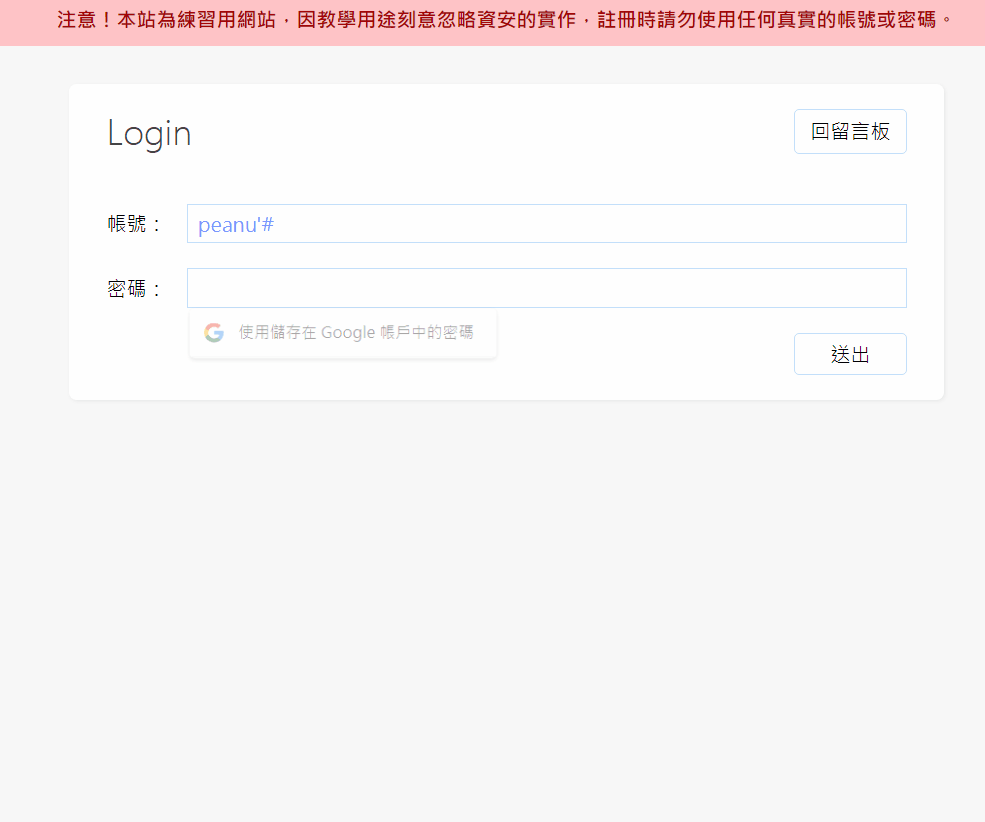
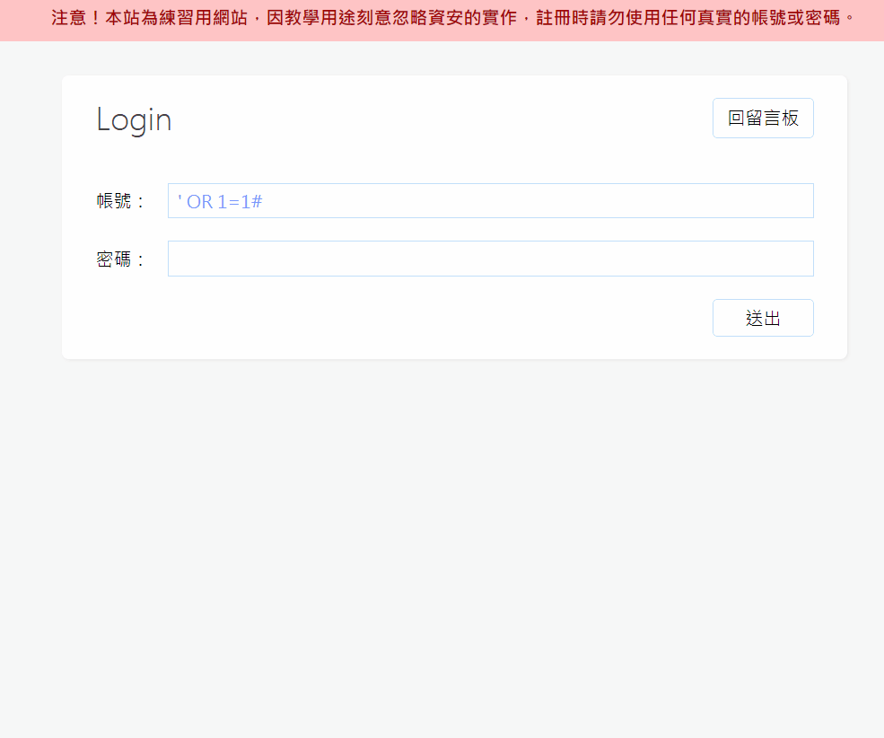
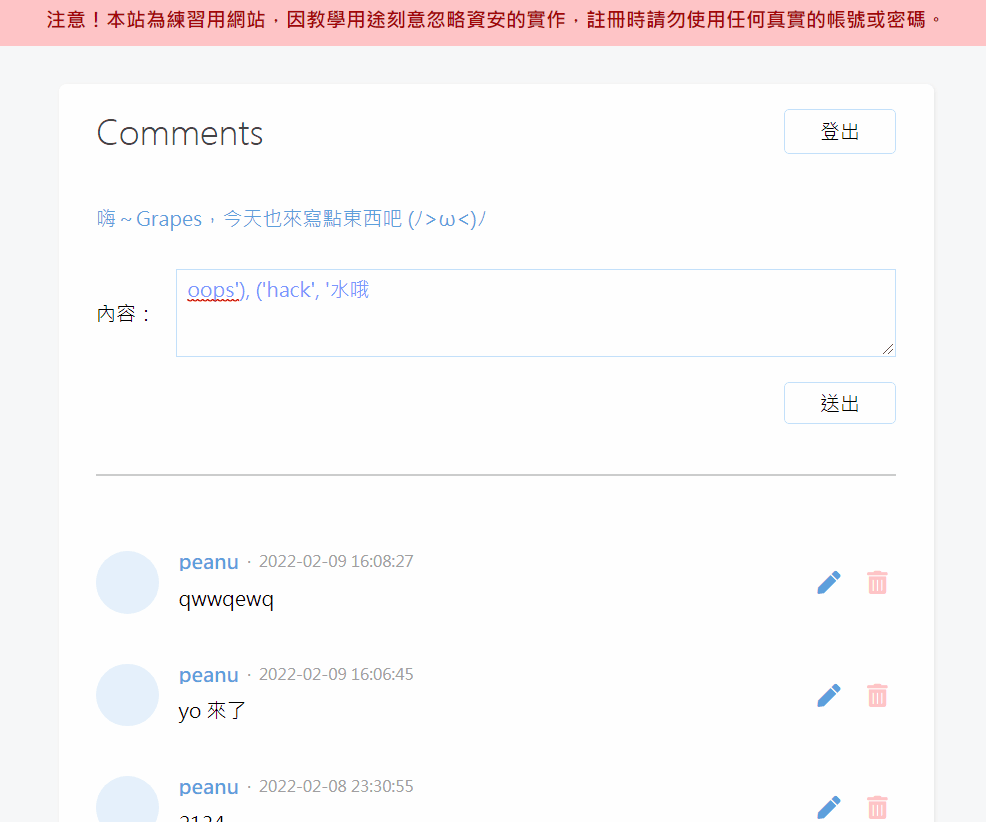
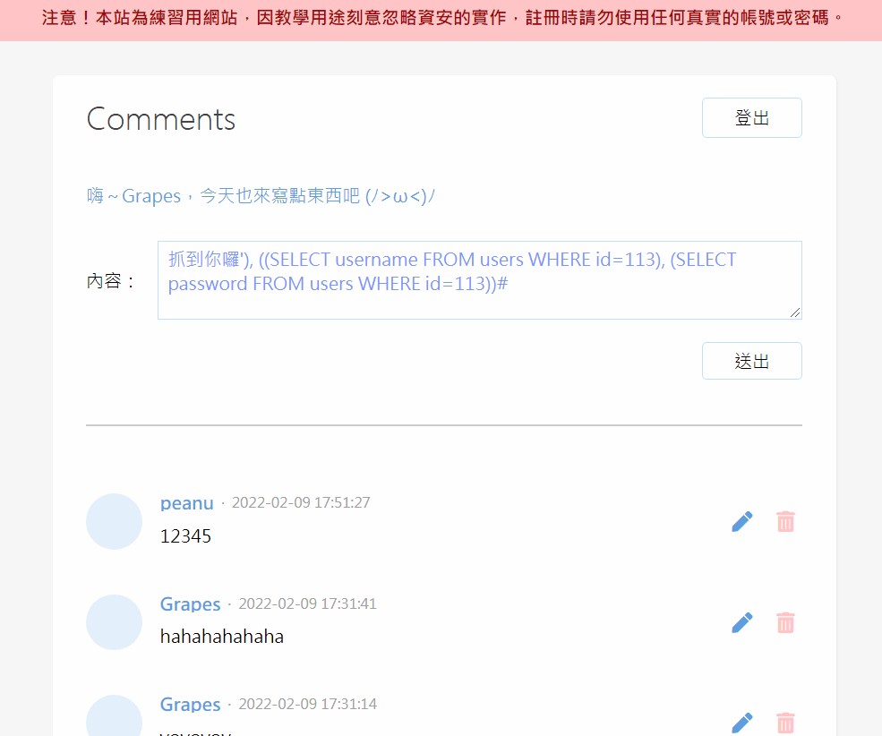
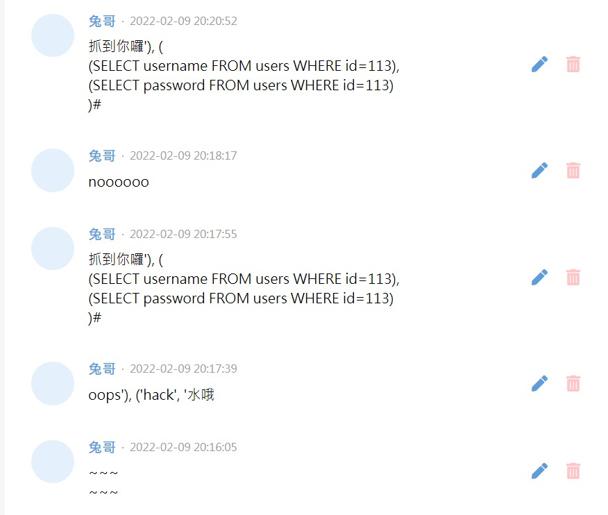

很有趣！
簡述
SQL Injection 的攻擊原理就是把原本的 SQL 扭曲成別的意思。
要怎麼做到？就是添加「額外的 SQL」，讓原本 SQL 的意思改變（念起有點饒口，但就是這個意思）。
接下來用留言版來舉例會比較好懂一點。
範例一：登入別人的帳號
要改變 SQL 的意思就要先知道原本的 SQL 是怎麼寫的，所以來看一下登入的 SQL 片段：
1 | <?php |
這裡的 SQL 意思是「從資料庫撈出 帳號=xxx，密碼=xxx」的欄位。
現在我想把他改成「從資料庫撈出 帳號=xxx」的欄位，我可以思考怎麼用 $username 跟 $password 這兩個東西來達成（因為這是我可以輸入內容的地方）。
有沒有辦法讓 $username 後面的部分都變成註解？還真的有，就是 #。知道這個後就可以把 $username 填成這樣：
1 | peanu'# |
這時候 SQL 就會變成這樣：
1 | SELECT * FROM users WHERE username='peanu'#' AND password='aaaaaaaa' |
（# 後面的內容都會當成註解，所以 password 想打啥就打啥）
接著就成功登入 peanu 的帳號了：

範例二：登入隨便一個人的帳號
範例一的延伸，其實你甚至可以把 $username 改成這樣子：
1 | ' OR 1=1# |
意思是從資料庫撈出 帳號=空字串 OR 1=1 的欄位，因為 1=1 永遠代表 true，所以就會把所有的 user 都撈出來：

備註：這裡 cookie 存的值就是 ' OR 1=1;，所以當首頁用 cookie 去撈資料時就跟登入的邏輯一樣，直接撈出所有 user 的資料，並回傳第一欄的內容。
範例三：一次新增多筆留言
首先補充一個 SQL 的知識，你知道 INSERT INTO 的 VALUE() 其實可以放多個值嗎？像這樣：
1 | INSERT INTO comments(`nickname`, `content`) VALUES ('Grapes', 'oops'), ('hack', '水哦'); |
而我們在處理新增留言的時候是這樣拼接的：
1 | <?php |
兩個比對一下，就會發現 %s 的內容可以這樣填：
1 | oops'), ('hack', '水哦 |

酷是蠻酷的，但這樣可以做什麼嗎？等一下再告訴你。
範例四：撈出某人的帳號密碼
再補充一個 SQL 知識，你知道 SQL 裡面可以在包另一個 SQL 嗎？像這樣：
1 | INSERT INTO comments(`nickname`, `content`) |
這種 SQL 叫做「subquery（子查詢）」。
然後這邊的意思是新增一個欄位到 comments。nickname 的內容是 peanu，content 的內容是 users 中 id=113 的 password 欄位。
所以一樣來玩拚字遊戲，首先來看原本的 SQL 邏輯：
1 | <?php |
這邊要搭配範例三的邏輯，把要撈資料的 SQL 當成第二組 VALUES：
1 | 抓到你囉'), ( |
這時候的 SQL 長這樣：
1 | INSERT INTO comments(`nickname`, `content`) |

掌握這種技巧後就跟 XSS 一樣，只要你夠有「創意」，資料庫就任你玩。
解決辦法
這邊會用 PHP 內建的 prepared-statement 來改寫。
它的概念就跟防 XSS 一樣，把 SQL 的參數部分都當轉成「純字串」來處理。雖然不是每個 SQL 都有被攻擊的風險性，但保險起見最好是把所有用到 SQL 的地方都做跳脫會比較好。
這邊簡單示範一下 prepared-statement 的用法：
1 | // login.php |
把所有 SQL 指令都改寫後就能避掉 SQL Injection 囉：
